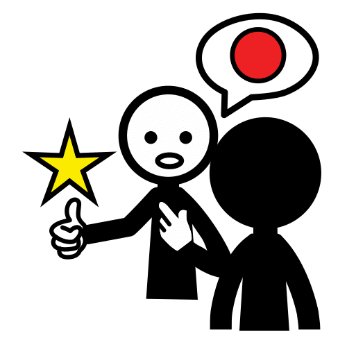

Dictionary
Pattern
- Example:
-
The T-shirt is decorated with a pattern of clouds.
La camiseta está decorada con un estampado de nubes.
- Spanish word:
-
Estampado, patrón
- Audio:
Tip

- Example:
-
He gave us tips on caring for our skin.
Él nos dio consejos sobre el cuidado de nuestra piel.
- Spanish word:
-
Consejo
- Audio:
Washing machine
- Example:
-
I wash dirty socks in the washing machine.
Lavo los calcetines sucios en la lavadora.
- Spanish word:
-
Lavadora
- Audio:
 Hi everyone!
Hi everyone!